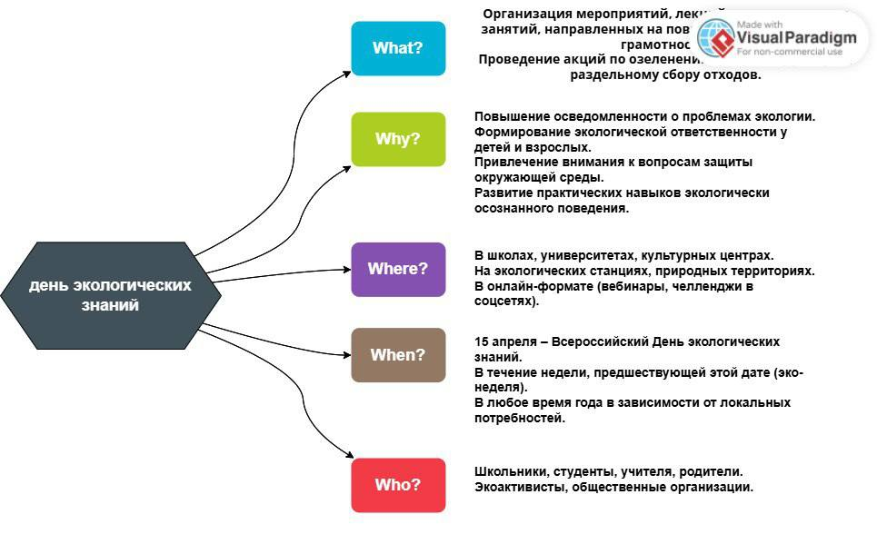

День экологических знаний
Анализ целевой аудитории

Краткое описание проекта
Освещение проблем экологии, привлечение внимания к сохранению природы и планеты — именно для этого и был создан День экологических знаний, который отмечают 15 апреля. В этот день обсуждают вопросы использования экологически чистых технологий, борьбы с изменением климата и уменьшения отходов.
Материалы
Проделанная работа
- руководство
- создание базы сайта
- создание викторины
- изменение сайта под тематику
- помощь в руководстве
- Помощь в создании и оформлении викторины
- создание презентации по теме
- помощь в измении сайта
- мелкие задачки
- Помощь в руководстве
- Моральная поддержка